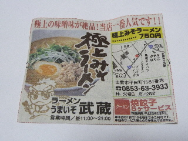
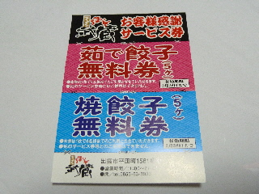

ラーメンうまいぞ武蔵でクーポンを使いました。
2012/12/30
新聞に武蔵のクーポンがあったので、大切に保管していました。
ここのラーメンは好きなので、いつか行こうと思っていました。

注文したのは、極上みそラーメンです。
券には750円となっていますが、今は650円とお得な値段になっていました。
鳥のミンチが入ってて、お肉の甘さと味噌味で、濃いめのスープが美味しかったです。
クーポン使って餃子をいただいて、お腹がいっぱいになりました。
ラー油を多目に付けたので、体がとっても温まりました。

帰りにサービス券をいただきました。
また行けたらいきたいです。